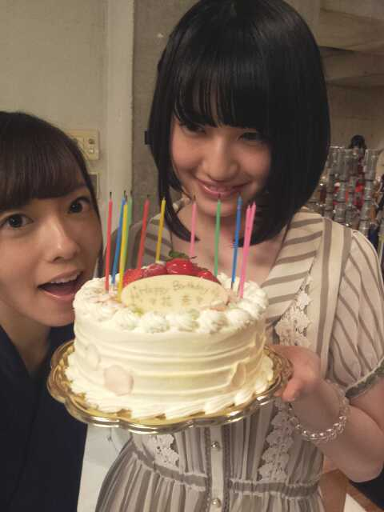

ほほーい ω ))
せーのっ??
ふんころがーし
ふんふんふんっ(^ー^)
ろってぃーでーす♪
8月 6日 ★☆★
かなりん * ・. ゜ ))
18歳 お誕生おめでとう !!
はーと。はーと。
メールでかなりんに
間違って19さいって
送っちゃった> <♪
ごめーんねっ*^^*))
かなりん♪は
おとなっぽくて
ひとつ上にみえない*^^*
いつも優しくて
冷静に物事考えて
チアと浴衣を着ると
さらに やばいくらい
可愛くなる かなりん♪が
大好きだよ＼(^-^)／
世の中の男の子は
かなりん♪にキュン死だ*^^*
ピンクの花びらが
かかったケーキさん♪

今日は アンダーステーション
でした☆
メンバーは
まひろ まあや みくも ねね。
なんだか、今日は
皆おちついてできました*^ω^*
今日来てくださった方々
朝早くからありがとうございます。
本当は これこらも
こうやって公開収録とか
し続けたいお気持ちよ。
まひろは´・ω
今日 咽がやられてて
思うように
声が出なかった =・ε・=
ちゃんと、まひろ声出てたぁ?
まあ 気合いで
なおすけどねーん。ω・´
てか本当にやばいのっ!!!
買い物に行く時間がなくて
洗剤がなくなったのに
買いに行けなくて
たまりに、たまっちゃってる
>_<
もう、今日の分の
バスタオルも無くて
小さいタオル使った...´・ω
そんな ろってぃー♪です,
のし。